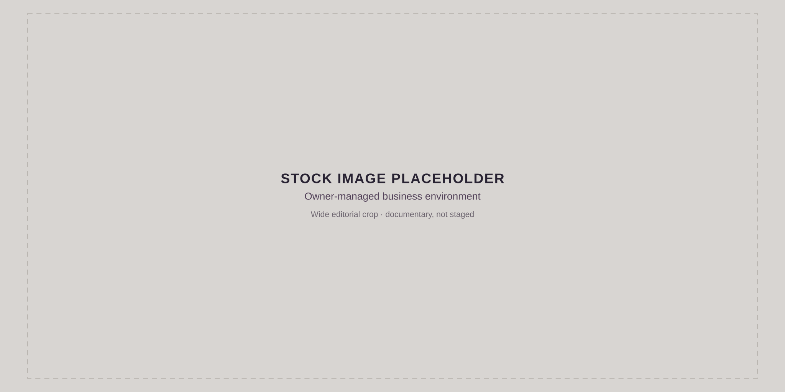

A small, selective team on your side of the table.
Noble Advisory Group is a Western Canadian advisory firm built for business owners who are thinking about what comes next, whether that is stepping back, bringing in new leadership, or eventually handing the business on. We work with owner-managed businesses in the $2-7M revenue range who want to understand what their business is worth, what would make it more valuable, and what needs to happen before they hand it off.

Owner-side by design
We are not brokers, we are not accountants, and we are not a large consulting firm. We are a small, selective team of experienced advisors who sit on your side of the table, focused on one thing: making sure you are in the best possible position when the time comes, however that looks for you.
Selective by design
Noble Advisory Group works with a small number of Western Canadian business owners each year to prepare, position, and guide them through ownership transition. We are not a volume practice. We are a dedicated team of experienced advisors who take on the work we believe in and bring everything we have to it.
The Noble premise
Build a business that gives you options.
When it is time to think about what comes next, you want the right people in the room.
Most business owners start transition planning years later than they intended. By then, options are fewer, timelines are tighter, and value is harder to protect. Noble Advisory Group helps owners prepare earlier, strengthen their businesses, and create more choices for whatever comes next.
Why now?
Many owners believe they will know when it is time to start planning. In reality, transitions are often triggered by unexpected events: health concerns, burnout, leadership changes, family circumstances, market shifts, or opportunities that arrive sooner than expected.
The strongest transitions are rarely rushed. They are prepared for years in advance.
Four Questions
Four honest questions that most business owners have never been asked together, and that shape everything about what comes next.
Direction
Where is your business headed?
Is your strategy, leadership, and direction aligned with the transition you want? Most owners have never put this in writing. The answer shapes everything, who the right buyer is, what the right timeline looks like, and what needs to change before you get there.
Value
What is it worth, and what would make it worth more?
An honest, plain-language picture of what your business is worth today and the specific levers that would move that number. We run this twice: once at the start to establish your baseline, and again at the end to show you what the recommended actions are worth.
Independence
Can this business run without you?
Buyers do not just buy revenue. They buy a business they believe they can operate and grow without you in the room. This question surfaces the gaps in your team, systems, documentation, and customer relationships that most owners have never had to think about.
Outcome
What does a successful transition look like for you?
Before we talk about numbers and timelines, we need to understand what you want. What do you want to protect? Who do you want to protect it for? What should continue after you hand it on?
How Noble Looks at Your Business
Four dimensions. One clear picture.
A structured look at your business before the pressure builds.
We start with a structured six-week Business Transition Program, a clear-eyed look at your business across four dimensions: where it is strategically headed, what it is worth today and what could improve that number, how well it runs without you, and where the gaps are that a buyer or successor would find first. You walk away with your Ownership Transition and Continuity Report, a scored profile across all four dimensions, and a practical roadmap showing you exactly what to work on and in what order.
The program is a structured engagement built around four integrated components. Together they answer the four questions. The output is your Ownership Transition and Continuity Report, a plain-language document that tells you where you stand, what the gaps are costing you, and what to do about them.
Strategic direction
Strategic Alignment Review
Looks at
Your transition goals, leadership structure, succession readiness, strategic positioning, and intended pathway.
Tells you
Whether your business is pointed in the right direction for the transition you want, and what needs to shift before you get there.
What your business is worth today, which levers would improve that number most, and what 12-18 months of action would do to transaction value. Run twice: baseline at intake, scenario model at debrief.
Owner independence
Operational Readiness and Continuity Review
Looks at
Owner dependency, process documentation, systems maturity, team stability, customer concentration, sustainability risk flags.
Tells you
Whether the business can operate and grow without you, and where the gaps are that a buyer or successor would find first.
Continuity baseline
C4: Re-Score and Continuity Baseline
Looks at
A structured re-score across all four dimensions using the same instrument as intake.
Tells you
A scored readiness profile, delta from where you started, where you are now, and your baseline for everything that comes next.
For owners who want to keep building from there, we stay engaged, monthly, focused, and tied to real outcomes, including improving your valuation, strengthening your operations, and positioning you for the strongest possible transaction when you are ready to move. The goal is not simply to prepare for a transition. The goal is to build a business that gives you options.
From clarity to action.
The work changes as your business changes. The sequence does not. We understand the owner and the business, assess what the evidence means, build around the priorities that matter, and stay beside you when it is time to move.
Purpose
Start with the owner, not the transaction.
What happens
We establish the context before recommending anything: what the business looks like today, what matters to you, where you are in your thinking, and which dependencies or unanswered questions could shape what comes next.
You leave with
A preliminary picture of where the business stands, the questions worth examining, and whether a deeper Noble engagement makes sense.
01
Before we meet
Two short assessments give us context on the business, your priorities, your timeline, and the dependencies that may affect transition.
02
First conversation
We review what surfaced together, test assumptions, and clarify the questions that deserve deeper work.
03
If there is a fit
You receive a defined scope, timeline, and flat fee for the Business Transition Program.
Purpose
Four dimensions. One clear picture.
What happens
Through the Business Transition Program, we examine the business across four connected dimensions and test what we learned during Understand. The goal is not more information. It is to distinguish the issues that materially affect value, continuity, and your available options.
You leave with
Your Ownership Transition and Continuity Report: a scored view of where the business stands, the gaps that matter most, and a practical order of work.
For owners who want to act on what the assessment surfaces.
What happens
We identify the few priorities most likely to improve readiness, reduce owner dependency, strengthen value, or clarify the transition path. Then we match the work to the level of support the business actually needs.
You leave with
A practical roadmap with clear priorities, ownership, and a cadence for moving the work forward without losing sight of the outcome.
Ongoing advisory
Strategic Roadmap Retainer
Monthly support focused on the highest-priority gaps, with clear accountability and progress tied to the roadmap.
Alignment & decisions
Transition Facilitation
Structured work with owners, leaders, or boards to align goals, roles, decision authority, and the pathway for ownership change.
Focused preparation
Value Preparation Program
A structured 12-month engagement to strengthen the business for succession, diligence, or a future transaction.
Purpose
When the time comes to transact, we stay in the room.
What happens
When you choose to pursue a transition, Noble stays on the owner's side of the table. We help maintain continuity across the decisions, people, and specialist workstreams involved as the process becomes more complex.
You leave with
An owner-side advisor who keeps the process connected to the outcome you defined at the beginning, while the right specialists lead the work that belongs to them.
Noble stays beside you
Prepare the story, priorities, and decision context for the transition
Coordinate across legal, financial, and transaction advisors
Help compare transition pathways and the trade-offs between them
Stay engaged as decisions become more complex
Specialists lead
Legal advice and documentation
Tax and accounting advice
Brokerage, buyer representation, and deal execution
Other specialist work required by the transaction
Start here
Ready to see where you stand?
No pressure, no sales process. Just a clear, honest look at what's next for your business, and for you.